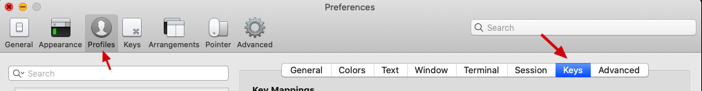
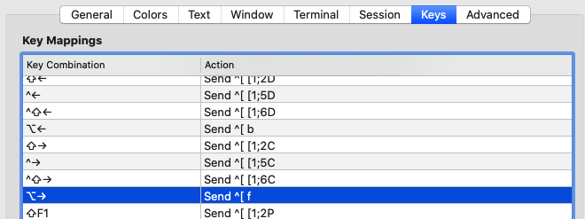
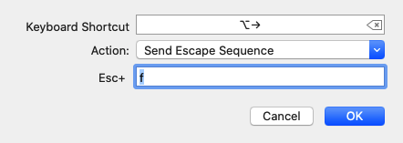

iTerm2的设置
normal和insert模式下设置不同光标¶
~/.vimrc 增加下面代码
" Change cursor shape between insert and normal mode in iTerm2.app
if $TERM_PROGRAM =~ "iTerm"
let &t_SI = "\<Esc>]50;CursorShape=1\x7" " Vertical bar in insert mode
let &t_EI = "\<Esc>]50;CursorShape=0\x7" " Block in normal mode
endif
光标按照单词快速移动设置¶




